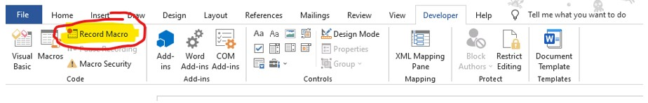
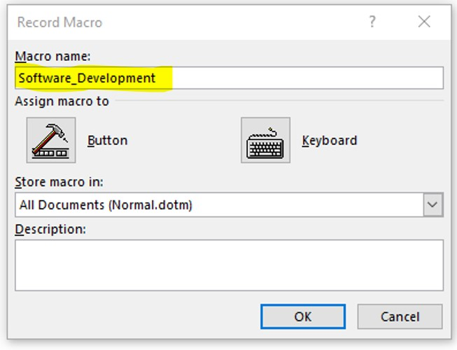
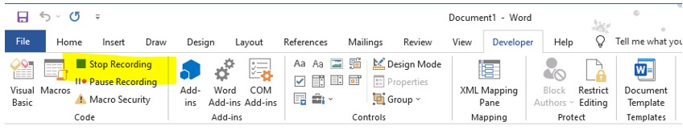

Using Macros in Microsoft Word
Credits to the video above for helping me learn Macros in Microsoft Word
Macros enable repeating the same task over and over again which helps in being more productive and time efficient. For example, I’ve formatted a section of text to look a certain way and I want to apply it to specific parts of my document. Instead of highlighting and making multiple changes on a single section (i.e., font type, font size, bold, italic, etc), I can just apply a Macro on the relevant sections instead.
Steps on creating, recording, editing and applying a Macro
Step 1
Go to the Developer tab in the Ribbon and select Macros
Step 2
Input a name for your Macro under Macro name.
Step 3
Press Keyboard and you’ll be taken to Customize Keyboard.
Under Press new shortcut key, input a shortcut key to allocate to your Macro.
Try and avoid shortcuts that already exist. In this scenario, I’m using Alt+T as my shortcut.
Select Assign and Close
Step 4
For this demonstration, I’ve copy pasted a paragraph 5 times and will apply the changes on each paragraph.
The original text is Font type Arial and Font size 11.
I changed the first paragraph to the following:
- Green font
- Italic
- Bold
- Yellow highlight
Step 5
Once I’ve completed all the editing, I select Stop Recording under the Developer tab Ribbon.
Step 6
Following this, I highlight Paragraph two and press ALT+T.
This copies the style I’ve applied on Paragraph ONE to paragraph TWO.
I highlight Paragaph THREE and press ALT+T.
This copies the same style to Paragraph THREE.
I can do this repeatedly to any text I highlight.